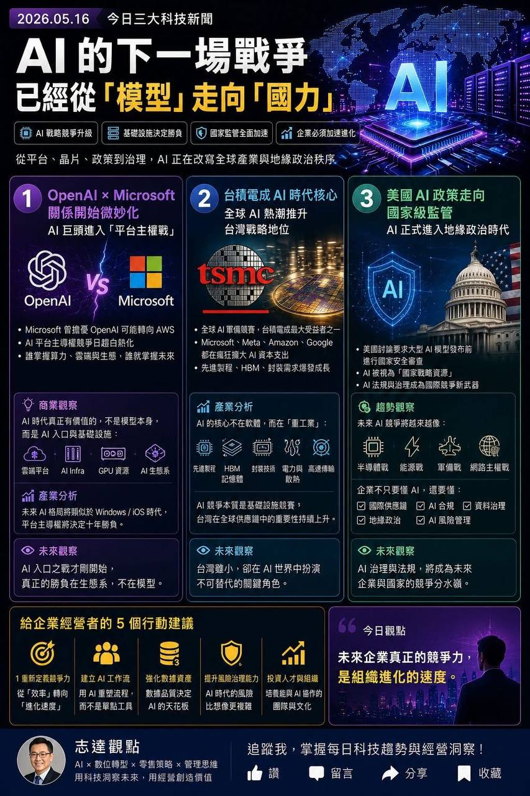

AI 的下一場戰爭：從「模型」走向「國力」

一句話：模型會商品化，但「控制面」會變貴
模型層
能力快速追平，成本下降，差異縮短。
平台層
掌握使用者入口、開發者生態、企業流程。
國力層
晶片、能源、資料主權、監管與安全審查。
把原圖往下一層拆：AI 競爭有六個戰場
1. 入口戰
誰掌握使用者每天打開的介面：OS、搜尋、Office、聊天、客服、企業系統。
2. 平台戰
誰能讓企業把 AI 接進流程、權限、資料與 API。
3. 算力戰
GPU、HBM、封裝、資料中心、網路與調度效率。
4. 能源戰
AI 資料中心吃電，電力、散熱、土地與水資源變成限制。
5. 治理戰
資料分級、合規、審計、模型風險、國安審查。
6. 組織戰
企業能不能把 AI 變成工作流，而不是停在 demo。
OpenAI × Microsoft 的重點不是八卦，而是「平台主權」
誰控制客戶？
企業客戶是透過 Microsoft 365、Azure、ChatGPT、API 還是自家 agent 進入 AI？入口會決定續約與擴充。
誰控制資料流？
提示詞、文件、CRM、客服紀錄、程式碼、會議內容都會流向 AI 平台；資料流就是未來的價值流。
誰控制部署？
公有雲、私有雲、本地模型、混合部署會影響成本、安全、合規與可替換性。
誰控制生態？
插件、agent、開發工具、模型商店與企業流程整合，會形成新的軟體平台鎖定。
企業選 AI 平台，真正要問五個問題
AI 的底層不是魔法，是重工業
台積電角色
先進製程與先進封裝讓高階 AI 晶片得以量產。
HBM 角色
高頻寬記憶體解決模型推論與訓練的資料吞吐瓶頸。
資料中心角色
把晶片變成可用算力，還需要電力、散熱、網路與維運。
台灣的機會：不只代工，而是 AI 基礎設施樞紐
優勢
- 先進製程與封裝聚落
- 伺服器、散熱、電源、零組件供應鏈完整
- 與全球雲端/晶片大廠高度連動
風險
- 地緣政治與出口管制風險
- 電力與土地資源壓力
- 供應鏈過度集中被放大檢視
下一層價值
從製造能力，延伸到散熱、能源管理、AI server、邊緣推論、企業場景整合。
企業啟示
台灣企業不應只看 AI 應用，也要理解自己的供應鏈位置是否會被 AI 重新定價。
AI 國安化：模型從產品，變成戰略資源
安全審查
大型模型能力、用途、部署對象可能被納入更嚴格審視。
出口管制
晶片、模型權重、雲端算力、特定 AI 能力都可能被限制。
資料主權
國家與企業會更在意資料存放地、跨境流動與可審計性。
企業 AI 治理：先分級，再開放
低風險場景
內部摘要、草稿、客服 FAQ、知識搜尋，可快速試點。
中風險場景
報價建議、客戶回覆、行銷素材，需要審核與版本控管。
高風險場景
法律、財務、資安、個資、自動決策，必須保留人工責任鏈。
禁區
未授權個資外傳、商業機密上傳、不可追溯自動決策。
從工具到工作流：AI 成敗在流程，不在 prompt
Level 1：個人效率
摘要、翻譯、草稿、資料整理。容易開始，但價值分散。
Level 2：團隊流程
客服、業務、行銷、採購、法務初審等 SOP 被 AI 加速。
Level 3：組織中樞
知識庫、權限、agent、報表、治理與跨系統流程整合。
建議路線圖：90 天做出可驗收成果
優先場景
客服 FAQ、商品比較、內部知識查詢、行銷文案、會議摘要、報告生成。
驗收指標
節省時間、回覆一致性、錯誤率、人工覆核率、客戶滿意度、知識缺口數。
管理層今天就可以開會問的 10 個問題
戰略面
- 我們最怕被 AI 改寫的價值鏈是哪一段？
- 我們有哪些資料是競爭對手拿不到的？
- 哪些工作流若加速 30%，會直接影響營收或成本？
技術面
- 資料在哪裡？格式是否可用？權限是否清楚？
- 要用公有雲、私有化、本地模型還是混合架構？
- 未來換模型是否會重做整套流程？
治理面
- 哪些資料不能丟給外部 AI？
- AI 產出誰審？誰負責？如何留紀錄？
組織面
- 誰是內部 AI owner？
- 如何培養能跟 AI 協作的主管與一線人員？
若放到良興場景：AI 應先解決「知識與服務一致性」
前台
官方帳號客服、商品推薦、規格比較、活動說明、售後查詢。
中台
商品知識庫、FAQ、會員資料摘要、客服紀錄、權限控管。
後台
缺貨/熱問報表、客服品質檢查、行銷素材生成、教育訓練。
治理
高風險回覆轉人工、敏感資料遮罩、回答來源追溯、SOP 版本控管。